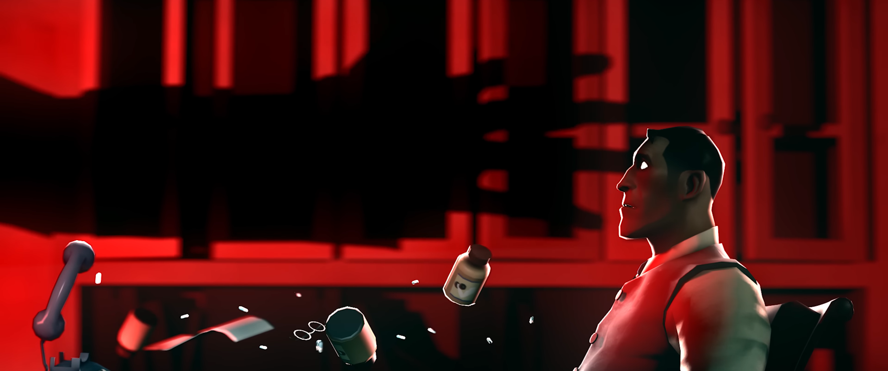

EMESIS BLUE
Emesis Blue is a fan-made, feature-length, psyhcological horror film, containing many references to other media, new and old alike. Using characters, assets, and lore from Team Fortress 2, it is widely considered a VASTLY impressive feat of online fanwork.
It was animated entirely in Source Film Maker, VALVE'S own animation software made for their game engine. SFM is known to be buggy, but very useful. A wonderful piece of software, albiet outdated. To make something running at 2 hours and 48 minutes long in such a progam, with such high quality, seems alien to me.
Other games made in the Source engine:
- Half life 2
- DOTA 2
- Counter Strike: Global Offensive
- Portal 1 & 2
- Left 4 Dead 1 & 2
Not only is it known for its's impressiveness, but the actual narrative has value as well. It's vague, but in your face. The horror can be subtle. Implications carry the film's actual content much further than initially stated. I've seen endless debating in forums, and analysis videos longer than the movie itself.
"On Halloween Night of 1968, an executive of the Builders League United Corporation mysteriously vanishes in Mortem, New Mexico. A private detective and washed-up war veteran team up to find him, yet the man they hunt is more dangerous than they can possibly imagine. "
Starting with a doctor's appointment, and ending somewhere between a trip to the underworld and a bar in limbo. It's an insane movie, but the cherry on top is the true intentions of its' creation.